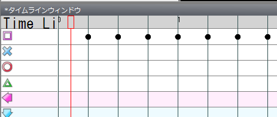
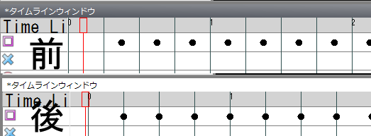
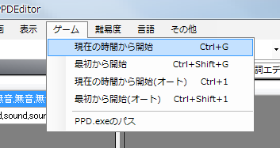

타임 라인 창에서 노트를 입력합니다.

세로줄 위에서 두번 누르면 노트가 생깁니다.
가로 줄은 노트의 종류를 나타냅니다. 우선 사각형의 위치에서 세로줄 위를 두번 눌러봅니다.

윗부분처럼 만들고 난 뒤 동영상을 재생해 보겠습니다.
탬버린의 소리가 나오기는 하는데... 박자가 안맞는 것 같습니다(박자이 안맞는지 감이 오지 않을때는 노트를 더 추가해 봅시다).거기서, 박자와 세로줄의 위치를 맞춥니다.
타임 라인 창 제목 바로 밑의 「Time Line」이라 쓰여진 부분(글자가 조금 짤려있을 수 있습니다) 위에 마우스를 가지고 갑니다.
이 부분을 누르면서 좌우로 끌면 노트 전체가 움직입니다.
적당하게 움직인 다음 재생하는 작업을 반복해 노트의 위치와 박자를 맞춥니다.
박자가 맞으면 이번에는 세로줄을 노트에 맞춰줍니다.
BPM입력칸 옆의 BPMOffset의 글 상자에 적당한 값을 넣어 세로줄을 노트에 맞춰줍니다.
BPMOffset의 최소값은 0, 최대값은 BPM의 수치입니다.

사양에 따라 다르지만 PPDEditor와 PPD에서 노래가 다르게 들릴 수 있습니다.
그때를 대비해서 PPDEditor로 간단하게 PPD에서 테스트를 할 수 있게 되어 있습니다.
인게임 메뉴에서 적당한 메뉴를 선택하면 PPD 창이 열려 테스트 플레이를 할 수 있습니다.
PPD에서 정상적으로 나오도록 조정합시다.

이것으로 간단한 노트 넣기가 끝났습니다.
이 다음부터는 동영상을 재생하면서 보컬의 박자에 맞춰서 노트를 넣어주세요.
노트의 종류는 한가지로 고정하면 좋습니다(다음에 간단하게 바꿀 수 있습니다)
노트의 지우기는 노트를 선택(파란색이 선택 상태입니다)한 뒤 Delete 키를 눌러 주세요.
범위 선택을 하면 한꺼번에 노트를 지울 수도 있습니다.
다음으로